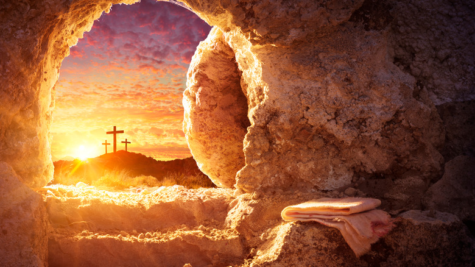
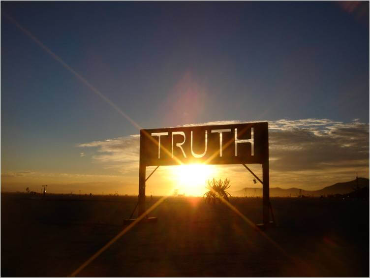

What Being a Christian Actually Means
October 2, 2024, by Anthony Roberts
I don’t go to church, but I consider myself religious. I don’t often write about religion, but today I will. It’s important to me—really, it is. I’ve always said, tongue-in-cheek, why wouldn’t I want a relationship with the Creator? Why wouldn’t I want to know God?
To me, it’s only human to wonder who’s behind all of this. It’s our right. It’s our uniquely human gift. Growing up, you go to school and hear about the Big Bang theory, but call me skeptical—I believe the world and universe are too complex for everything to have happened by accident.  If it is, it’s one heck of a lucky accident. And even more so, how did all the matter form? This is not to say science and religion cannot coexist—they should. But it is to say there is something more. Lately, with a curious mind, I’ve made a habit of reading the Bible to understand more and form my own thoughts on the stories I’ve heard for decades. I tend to think religion, much like politics, is a giant game of telephone—someone says something, and it gets misinterpreted in ways only humans can misinterpret. So, I started reading the Bible to get my own thoughts. After much reflection, here’s my stance in a nutshell: Real Christianity is much harder than you think.
Being a Christian is about striving to be Christ-like, living beyond selfish desires and impulses. It’s not about attending church or appearances, but following Christ’s example—living a life of love and resisting the urge to judge, indulge in pride, or act out of ego. The author acknowledges that humans are deeply flawed and driven by self-preservation and comfort. Despite these struggles, Christianity is about continual effort: living for God, overcoming personal flaws, and embracing love, even when it's hard.
The Nature of Truth
October 4, 2024, by Johnbritto Kurusumuthu
 If there’s one thing I’ve learned over the years, it’s that truth is not fixed. Our understanding of what is “true” is shaped by our knowledge, experiences, and the lens through which we view the world. I once believed that success meant climbing the corporate ladder, achieving societal status, and acquiring material possessions. But life has a way of humbling us, doesn’t it? As I matured, I realized that success has less to do with external measures and more to do with internal fulfillment—something that shifts as our priorities evolve. I now see truth as a fluid concept, one that changes over time, culture, and personal growth. What may have seemed undeniably true to me a decade ago is now up for reconsideration.
This evolution isn’t a betrayal of my past beliefs; rather, it’s a testament to the complexity of human understanding. We are shaped by the ever-changing circumstances of our lives, and so too is our perception of reality.